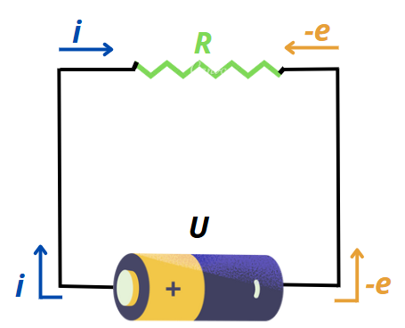
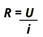
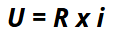
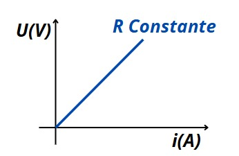

Primeira Lei de Ohm
Utilizaremos a figura abaixo para entender este primeiro conceito na eletrodinâmica:
Na imagem temos uma pilha comum, a mesma que utilizamos em pequenos aparelhos do nosso dia-a-dia, como controle remoto e brinquedos diversos, e analisando a sua utilidade e o seu contexto, concluimos que ela proporciona uma tensão elétrica (U) que também é conhecida como diferença de potencial - medida em Volts (V). Verificando o seu corpo, identificamos os seus polos negativo e positivo, e a partir da imagem, se ligarmos os mesmos com um fio adquirimos assim, uma corrente elétrica (i) - medida por ampères (A), esta que, por sua vez, sempre percorre o lado positivo (+) em sentido para o lado negativo (-), sendo assim retornando o caminho para a pilha.
Em um pensamento mais maduro em relação a eletrodinamica é concluído que nesta corrente os elétrons (e-) são levados em sentido contrário do circuito, do polo negativo para o positivo.
O grande objeto final para enterdermos o circuito é o Resistor, que como o nome já deixa claro promove resistência(R) - medida em Ohm(Ω) para a onda de életrons que o perpassa, que se debaterem com o objeto ao ponto de produzirem uma energia suficiente para liberar calor e esquentar o mesmo. Esta dinâmica de corrente elétrica é usada por exemplo em chuveiros elétricos, secadores de cabelo, torradeiras e outros eletrodomésticos.
A fórmula que a 1ª Lei de Ohm nos repassa tem como objetivo calcular o valor de resistência nesta corrente. Assim temos:
Esta fórmula é popularmente modificada para que seja mais fácil relembrar, sendo assim:
A qual nós lemos e lembramos como "Uri", ficando mais fácil a memorização.
Resistor Ôhmico
Um Resistor Ôhmico é aquele em que a Resistência (R) é constante, o que significa que, o seu valor em Ohm (Ω) sempre será o mesmo independentemente das condições ou valores da Corrente ou Tensão.
Na figura abaixo está representado em um gráfico a resistência desse resistor:
Exemplos:
A seguir nós temos alguns exemplos a fixar.
-
Resistor em um circuito simples:
Se um resistor de 50 Ω for ligado a uma fonte de 100 V, a corrente que passa por ele será:
I = U / 𝑅 = 100V / 50Ω = 2A -
Cálculo da corrente em uma lâmpada:
Se uma lâmpada de 60 W funciona em uma rede elétrica de 120 V, podemos calcular sua resistência primeiro:
I = U / 𝑅 = 120V / 240Ω = 0,5A -
Chuveiro elétrico:
Um chuveiro de 220V tem resistência de 44 Ω. Qual a corrente que circula nele?
I = 𝑉 / 𝑅 = 220V / 44Ω = 5A
Exercícios
Clique aqui para ir para os exercícios sobre a 1ª Lei de Ohm